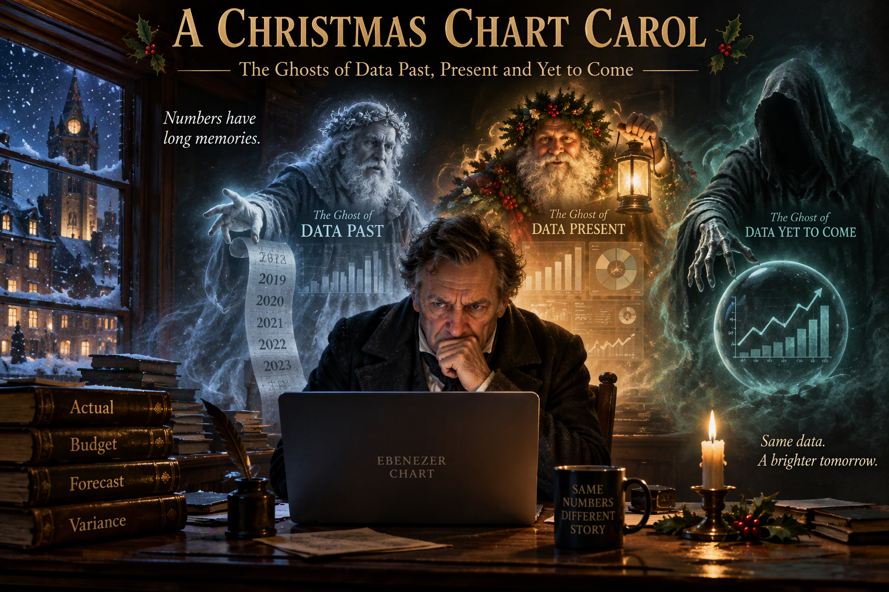
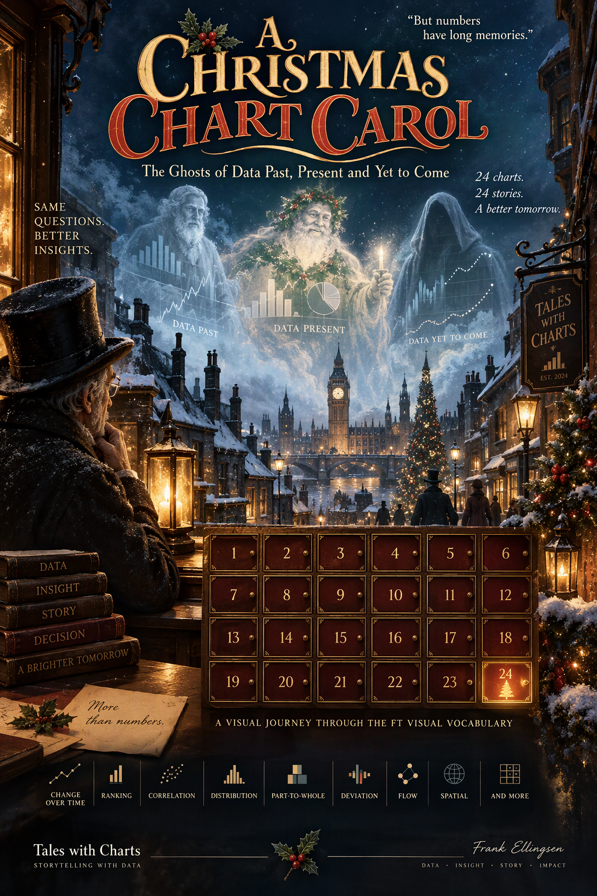

Day 01 • Horizontal Bar Chart
The Ghosts of Data Past, Present and Yet to Come: Lessons in Charts & Storytelling with Data through the Life and Works of Charles Dickens
High-resolution visual anchor artworks pairing Victorian Christmas atmosphere with modern data storytelling aesthetics.

The grand cinematic series banner. Depicts Victorian snowy London with warm candlelight, illuminated Advent calendar windows, and subtle spectral charts emerging from the London fog.

The collector's edition vertical portrait. Designed for mobile feeds and publication cover pages, highlighting the three data visitations in rich Victorian crimson and gold.
Explore structured datasets from data/dickens/ powering all 25 daily charts, lessons, and narratives.
Daily lessons in Headlines, Direct Labeling vs Legends, Annotations, and Tufte's Data-Ink Ratio.
✨ Click any visual card to expand and view in high-resolution full screen.